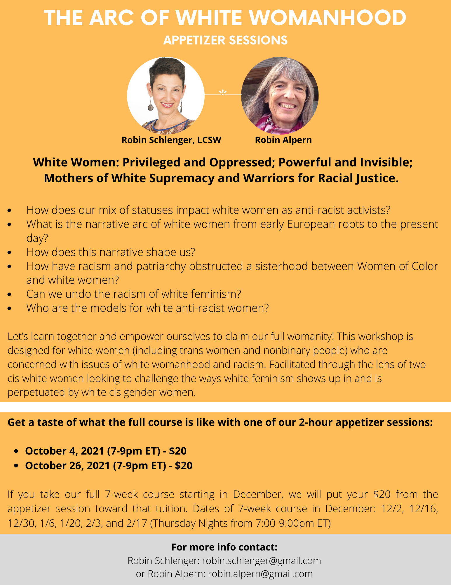
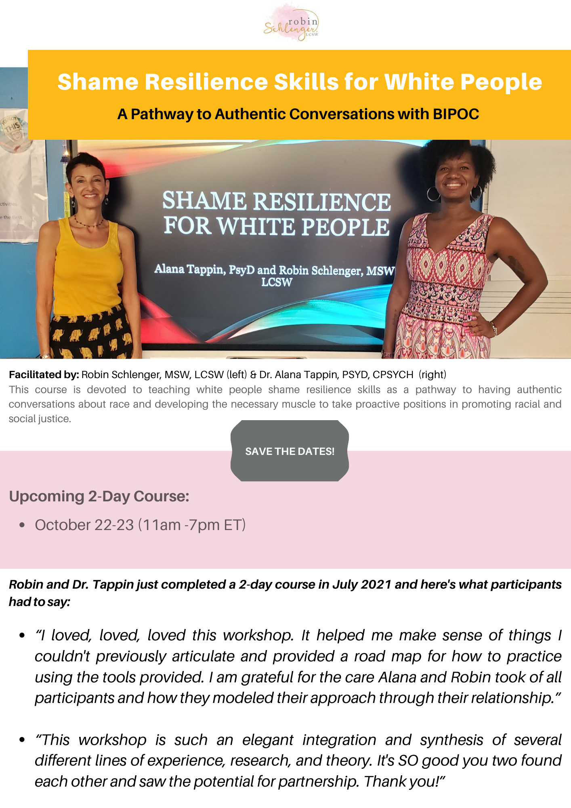

2021-08-16
White Body Supremacy Doesnt Just Live In Our Thinking Brains It Lives And Breathes In Our Bodies Resmaa Menakem
I made a promise to myself that I would find time this summer to do some re-reading of books in my collection. I find that things often hit me differently the second time around by bringing new perspectives, insights, and meaning. I’m currently re-reading “My Grandmother’s Hands'' by Resmaa Menakem. It had a profound impact on me the first time around and helped me to better understand the impact of white supremacy culture (white- body supremacy) on my own body. When I first read this book, I had been facilitating “Shame Resilience and Transformational Skills for white people'' workshops with Dr. Alana Tappin for about a year. A year later, I’m finding that I am making new connections and feeling the words on a much deeper level. His words resonate with what I experience in my own body and with what I witness in the white bodies of workshop participants as they begin to shift their focus from their intellect to their bodies. I believe that it is very important to educate ourselves and unpack the messages we have absorbed by living in and breathing white- body supremacy. However, I don’t think we can truly heal unless we also attend to our bodies. In the words of Resmaa Menakem: “White- body supremacy doesn’t just live in our thinking brains. It lives and breathes in our bodies. As a result, we will never outgrow white- body supremacy just through discussion, training, or anything else that’s cognitive. Instead, we need to look to the body and to the embodied experience of trauma”. I believe that white people can only truly begin to heal the shame (Resmaa Menakem calls it dirty pain) that we experience when we begin to reckon with our own complicity in and perpetuation of racism through embodied work. I’m seeing the healing happen in my own body and in the bodies of the white participants in our workshops. We need to feel it in our bodies so that we can transform it.
See you on the journey,
Robin
Embedded media (requires internet): //cdn.embedly.com/widgets/media.html?src=https%3A%2F%2Fwww.youtube.com%2Fembed%2F1TpYUPL2bKg%3Ffeature%3Doembed&display_name=YouTube&url=https%3A%2F%2Fwww.youtube.com%2Fwatch%3Fv%3D1TpYUPL2bKg&image=https%3A%2F%2Fi.ytimg.com%2Fvi%2F1TpYUPL2bKg%2Fhqdefault.jpg&key=61d05c9d54e8455ea7a9677c366be814&type=text%2Fhtml&schema=youtube
I was recently interviewed by Amira Martin, LCSW-R, and I shared more about my private practice, training, and leadership work. Throughout the interview, I talked about my approach to my work as a white therapist using an anti-racist perspective.
Click the video to watch, like, and subscribe! Full link: https://www.youtube.com/watch?v=1TpYUPL2bKg


The Arc of white womanhood
Appetizer Sessions
In October, Robin and I will host two appetizers for those who want to get a sample experience of the full 7-week course that will begin in December 2021. See the flyer below for more information.

Shame Resilience Skills for white people 2-Day Course

PISAB (People’s Institute of Survival and Beyond: Undoing Racism and Community Organizing Workshops (Virtual-Zoom)- registration links
CSWAC (Center for the study of white american culture): Workshops listed below with registration links: